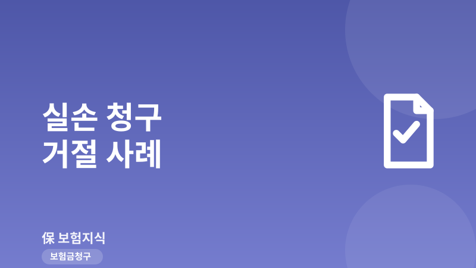
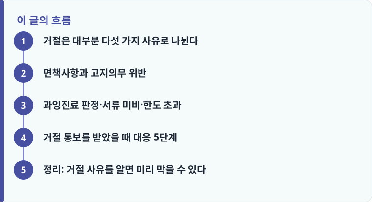

실손 청구 거절의 대부분은 보장 자체가 없어서가 아니라, 면책·고지·과잉진료·서류·한도라는 다섯 가지 조건에 걸리기 때문입니다.
거절 통보서에는 반드시 약관 조항과 사유가 적혀 있으므로, 감정적으로 항의하기 전에 어떤 조항이 근거인지부터 확인해야 합니다.
같은 진료라도 급여·비급여, 통원·입원 분류에 따라 자기부담금과 한도가 달라져 실제 지급액이 기대와 다를 수 있습니다.
거절은 대부분 다섯 가지 사유로 나뉜다
실손의료보험은 실제 부담한 병원비의 일부를 돌려받는 구조라, 대부분의 사람들은 ‘영수증만 내면 자동으로 나온다’고 생각합니다. 하지만 보험회사는 청구가 들어오면 약관에 정해진 지급 요건을 하나씩 확인하고, 요건에 맞지 않으면 전부 또는 일부를 지급하지 않습니다. 실제로 거절되거나 삭감되는 사례를 모아 보면 사유는 크게 다섯 가지로 좁혀집니다. 바로 약관상 면책사항, 가입 당시 고지의무 위반, 비급여 과잉진료 판정, 청구 서류 미비, 그리고 통원·입원 한도 초과입니다.
이 다섯 가지는 성격이 다릅니다. 면책사항과 고지의무 위반은 ‘애초에 보장 대상이 아니다’라는 지급 거절에 가깝고, 과잉진료·서류·한도는 ‘일부만 지급된다’는 삭감에 가깝습니다. 그래서 거절 통보를 받았을 때 가장 먼저 할 일은 내 건이 완전 거절인지, 부분 삭감인지, 아니면 서류 보완으로 되살릴 수 있는지를 구분하는 것입니다. 청구 절차 자체가 낯설다면 실손보험 청구 방법을 먼저 훑어보면 이 글의 사유들이 더 잘 이해됩니다.
면책사항과 고지의무 위반
첫 번째 사유는 약관에 명시된 면책사항입니다. 실손보험은 ‘질병·상해로 인한 치료비’를 보장하지만, 처음부터 보장에서 제외한 항목이 있습니다. 대표적으로 미용·성형 목적의 시술, 단순 피로나 노화에 따른 영양제·비타민 주사, 치료 목적이 아닌 건강검진, 임신·출산·비만 관련 비용, 그리고 자해나 범죄행위로 인한 상해 등이 여기에 해당합니다. 같은 도수치료라도 질병 진단과 의학적 필요성이 인정되면 보장되지만, 통증 완화나 예방 목적이라고 판단되면 면책으로 분류돼 거절될 수 있습니다.
두 번째 사유는 계약 전 알릴 의무, 즉 고지의무 위반입니다. 가입할 때 최근 3개월 이내 진단·투약 여부, 5년 이내 입원·수술·중대질병 이력 등을 사실대로 알려야 하는데, 이를 빠뜨리거나 축소해서 알린 경우 보험회사는 계약을 해지하거나 해당 질병 관련 보험금을 지급하지 않을 수 있습니다. 특히 고지하지 않은 병력이 이번 청구 질병과 인과관계가 있다고 판단되면 거절 가능성이 커집니다. 다만 회사가 계약 후 일정 기간(통상 보장개시일부터 3년, 청약일부터 3년)이 지나면 고지의무 위반을 이유로 해지할 수 없는 제척기간도 있으므로, 무조건 거절이 정당한 것은 아닙니다. 이런 유형별 실제 판단 사례는 보험금 거절 사례에서 더 구체적으로 확인할 수 있습니다.

과잉진료 판정·서류 미비·한도 초과
세 번째 사유는 비급여 과잉진료 판정입니다. 실손보험에서 논란이 가장 잦은 부분으로, 도수치료, 체외충격파, 백내장 다초점렌즈, 영양수액처럼 비급여 항목이 짧은 기간에 반복되면 보험회사가 의학적 타당성을 다시 따집니다. 예를 들어 뚜렷한 호전 근거 없이 도수치료를 수십 회 반복하면, 일정 횟수 이후는 ‘치료 효과가 입증되지 않은 과잉진료’로 보고 지급을 제한하는 경우가 있습니다. 이때는 주치의 소견서와 경과 기록으로 필요성을 입증해야 다툴 여지가 생깁니다.
네 번째 사유는 서류 미비입니다. 의외로 흔한데, 진료비 세부산정내역서 없이 영수증만 제출하거나, 진단명이 적힌 진단서·소견서가 빠지거나, 통원·입원 구분이 서류상 불명확한 경우입니다. 실손은 급여 부분 자기부담금 20%, 비급여 부분 30%(세대·상품에 따라 다름)를 제하고 지급하기 때문에, 급여·비급여가 구분된 세부내역서가 없으면 계산 자체가 불가능해 보완 요청이나 지급 지연으로 이어집니다. 어떤 서류가 필요한지는 청구 필요서류를 미리 확인해 두는 것이 가장 확실합니다.
다섯 번째 사유는 통원·입원 한도 초과입니다. 실손은 통원과 입원의 한도가 따로 정해져 있습니다. 통원의 경우 외래 진료와 처방조제를 합쳐 하루 한도(예: 25만 원)와 연간 방문 횟수 한도가 있고, 이를 넘는 금액은 지급되지 않습니다. 반대로 실제로는 입원인데 통원으로 청구하면 유리한 한도를 못 받는 경우도 생깁니다. 통원·입원·수술의 청구 기준이 헷갈린다면 입원·수술·통원 청구 기준을 함께 보면 분류 실수를 줄일 수 있습니다.
작성·검수 기준
이 글은 특정 보험사 상품을 평가하거나 청구 결과를 보장하기 위한 것이 아니라, 실손보험 청구가 거절·삭감되는 대표적인 사유와 그에 대한 일반적인 대응 방향을 정리하기 위해 작성했습니다. 자기부담 비율, 통원 한도 금액, 면책 항목, 고지의무 제척기간 등은 가입 시점의 세대(1~4세대)와 개별 약관에 따라 달라질 수 있습니다.
따라서 실제 거절 사유가 정당한지 판단하려면 본인 증권의 약관과 상품설명서, 그리고 보험회사가 보낸 지급심사 결과 통보서를 함께 확인하는 것이 가장 정확합니다.
거절 통보를 받았을 때 대응 5단계
거절이나 삭감 통보를 받았다면 감정적으로 항의하기보다 사유를 근거로 순서대로 대응하는 편이 훨씬 유리합니다. 대부분의 거절은 서류 보완이나 소견 보강만으로 뒤집히는 경우가 적지 않기 때문입니다.
- 지급심사 결과 통보서에서 거절·삭감의 근거 약관 조항과 구체적 사유를 먼저 확인합니다.
- 내 건이 완전 면책인지, 서류 미비에 따른 보완 대상인지, 과잉진료 판정에 따른 부분 삭감인지 유형을 구분합니다.
- 서류 문제라면 세부산정내역서·진단서·경과기록 등 빠진 서류를 갖춰 재청구합니다.
- 의학적 필요성이 쟁점이면 주치의 소견서로 치료의 타당성을 보강해 이의를 제기합니다.
- 회사와 이견이 좁혀지지 않으면 금융감독원 분쟁조정 등 보험금 분쟁 대처 절차를 활용합니다.
정리: 거절 사유를 알면 미리 막을 수 있다
실손 청구 거절은 대부분 예측 가능한 다섯 가지 사유 안에 있습니다. 가입 때 병력을 사실대로 고지하고, 치료 전에 급여·비급여와 통원·입원 구분을 챙기고, 세부산정내역서를 빠짐없이 제출하며, 반복 비급여 치료는 필요성 근거를 남겨 두면 상당수의 거절과 삭감을 미리 피할 수 있습니다. 이미 거절을 받았더라도 사유를 정확히 파악하면 보완·이의·분쟁조정으로 되살릴 여지가 있습니다.
다른 보험 정보 글이 궁금하다면 보험지식 블로그에서 이어 읽어 보세요. 가입 전에는 반드시 약관과 상품설명서를 확인하는 것이 가장 안전한 방법입니다.